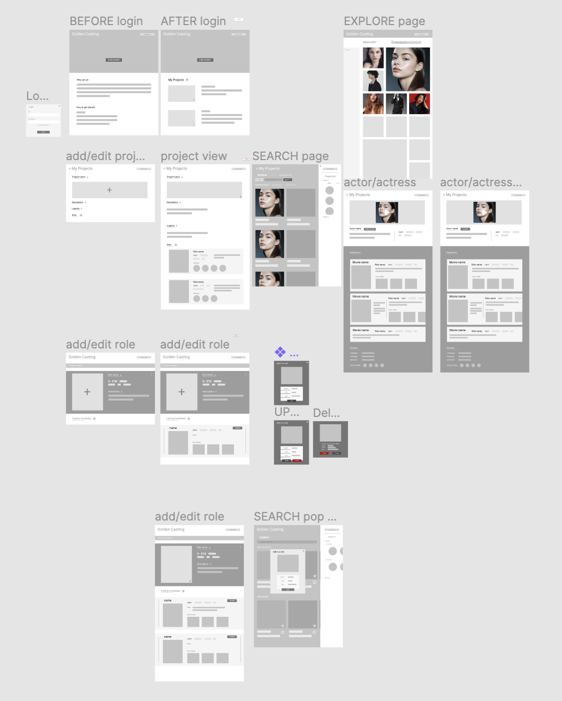
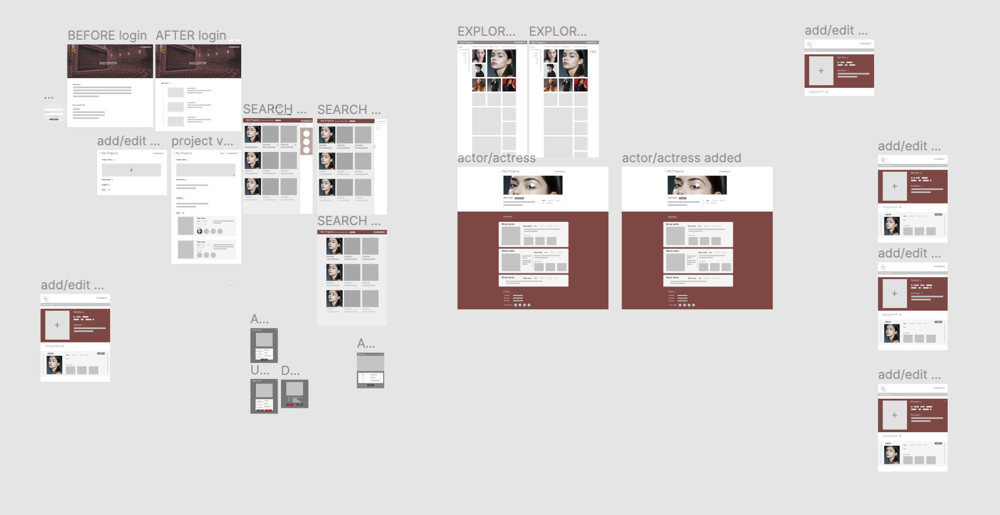
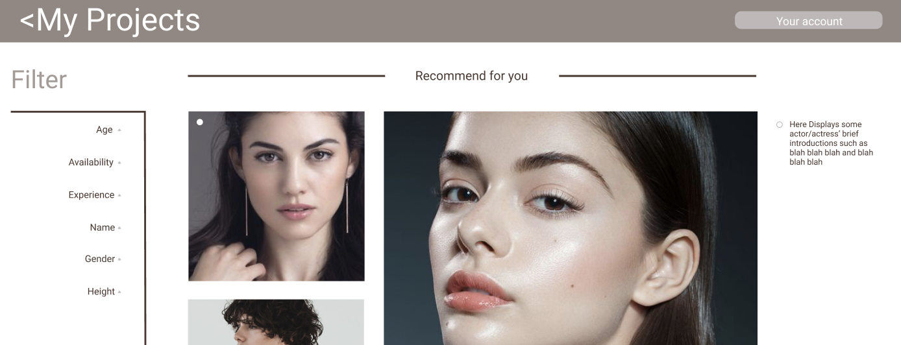
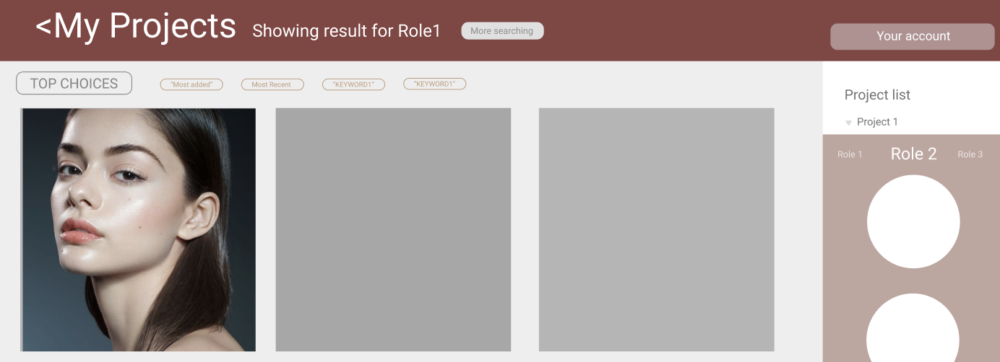

Intro
Casting process is very essential since it is the first step connecting imagined characters to a real person. It is part of the role design process, and it will highly affect how vivid the role becomes in the story. However, The casting process is complex. It includes --- gathering information from different sources such as schools or companies; sorting informations based on age, gender, experience and more; filtering informations based on different role’s requirement; and finally analyzing who are the best fits and if they can come to an audition. A lot of the work is redundant such as filtering out by gender and age or checking for a fitting schedule. Time needed for other processes are wasted.
Brainstorming
Phase 1 (6/13/2020-9/25/2020)
UX and Mobile design
In order to learn more about this project and the user's need, we interviewed the casting team member from Chinese entertainment industry. We learnt that they are facing the follow difficulties with casting process.
- Too time consuming during the sea selecting process.
- Casting director usually decides all the casting list which might result in bias.
- The casting database is usually fixed and not updated on time.
After the interviews, we came up with some ideas about where we could help with our platform.
-
We wish to develop a rating system that can give the
casting director a reference about how good a actor/actress
is from the past experience. And we are also looking for an
efficient communication environment to help both side get to
know each other more.
-
The actor/actress should have a certification before enter
the app to prove that they are qualified actor/actress. After
this they could have a fair competing environment overall.
No matter where they are from, they are equally possible to
be discovered by the casting team.
-
Instead of pdfs, we sort them automatically with the same
format and UI. In this way, if there is any changes and
modifications in the future, we can easily operate on the webapp.
Without going over all the paper materials.
-
With a casting online system, we can have more transparent
environment for the casting process. All authorized people
can check the casting process thoroughly and add on comments
or even operate on the selected list. This will benefit all
of actors/actresses, casting team and production team.
Mobile Demo
Phase 2 (9/28/2020-12/13/2020)
UI design and engineering development
From the previous phase, we learnt that casting is one of the most important movie production; its goal is to find the right actor for a specific role based on its look, age, and personality. The casting quality is crucial for the success of a movie, and it is very important to keep it high quality.
To build on this basic idea we made a few changes.
- We move the platform to Websites, since it is a efficiency tool, we made it more convenient on PC than mobile.
- We changed the UI to make the screen fit better on website.
Solution
We want to help casting crew to find the best candidate for their movie project in the most efficient way:
- A web app that is tailored for managing casting projects.
- An actor database that contains the updated information.
- A search algorithm that can help to filter out the most suited candidates.
UI design
First Iteration
This iteration basically adopted all the elements from the mobile demo. We believe that websites should contain more information in one page than mobile. Therefore we made it more complex.
We made the following unique decision to our new UI.
- Home page
- Added a banner on the top with a discover button.
- Brief introduction about ourselves as well as new user guide.
- Created a login/logout button top right.
- Explore Page
- Added a filter area.
- Reform the pictures layout.
- Search Page
- Added a brief filter area for precise search.
- Added a sidebar for project preview.
- Project Page & Actor/Actress page
- Reconstructed the layout for picture, name, candidates, and description.
Second Iteration
For this iteration, we also considered the color scheme and details in actual display.
The color is called "red carpet" scheme. We think it is a good choice to make the user feel like they are picking the roles on the red carpet. It is different from the traditional efficiency tool color scheme, and we believe it is a challenge.
Algorithm
 One of the biggest part in our plan is to establish a recommendation system that can assist our users during sea selection. The algorithm will be included in both Search and Discover page. Our original thought is to filter with our algorithm about which actor/actress is the best fit. However, with this idea in mind, we believe that we should let the user take control of whether or not they will take our recommandation. Just like some recommending system, Spotify, Youtube, and Netflix, they all have a main recommendation and other categories to allow more freedom. This is very important especially for creativity, because creativity should look at things in different ways and angles. After this interview we changed our recommendation system into an optional process. This gives the casting directors more space to create the characters. Moreover, we adopted a lot of details they have suggested. We believe that this could help the casting team to work more efficiently at the same time bring up the creativity to another level.